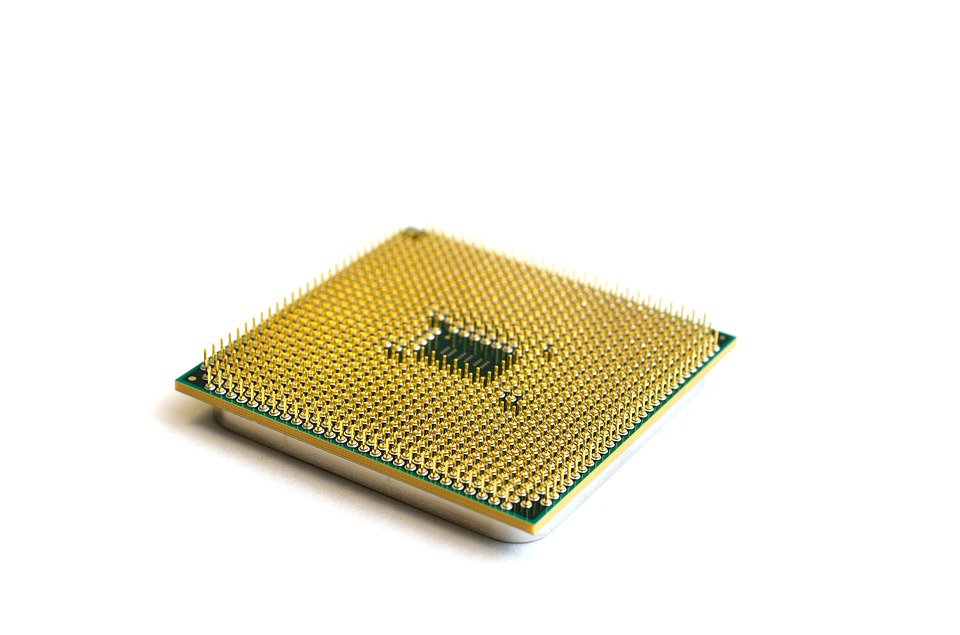
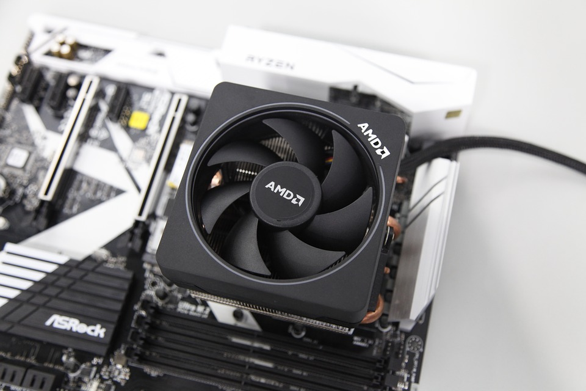
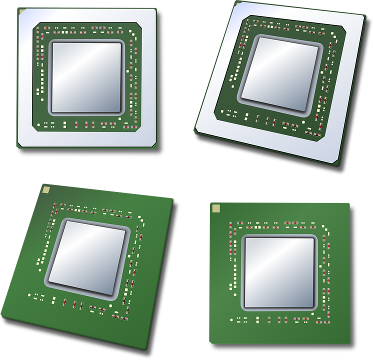

The processor is usually used to describe the central processing unit (CPU) and can be thought of as the brain of the computer. The CPU is responsible for carrying out the basic instructions of a computer. It is the chip where all of the instructions are processed for the programs you are running.

The two major brands of processors are AMD and Intel. Generally, for each of these brands, as long as the model's generation is the same, then the bigger the model number, the ‘better’ the processor. For example if all of these intel processors are from the same generation, then an i3 3Ghz < i5 3Ghz < i5 3.2Ghz < i7 3Ghz.
This is especially true for processors in laptops. However, if you are putting together a desktop and have a specific use case, such as gaming, this may not be the case. For example, you may be able to overclock (configuring your components to operate faster than they were intended) the i5 from 3Ghz to 4.2 Ghz making it pretty much on par with an i7 at the same frequency (the Mhz and Ghz) BUT for a fraction of the price, about $260 CAD cheaper.
In the past, when there were only single core processors, the best CPU was based on the clock rate where the larger the number, the faster the processor (4.2Ghz > 3.1 Ghz).

When CPUs only had one processor, it was easy to know which was faster but with multi-cores today, that’s no longer the case. During the single core era, Intel and AMD would improve performance by increasing the frequency of its processors. They did this until they hit a speed wall. To move forward, they took 2 CPUs and put them together to create what we know today as multi-cores.
Just as the naming suggests, dual core = 2 cores, quad core = 4 cores, and octo core = 8cores (these are not actually true octo-cores but are configured more like two separate quad core chips side by side but that’s not terribly important for your understanding).
You might think that adding more cores, such as dual cores at 2ghz = 4ghz but that’s not the case because it’s actually 2 cores each at 2ghz. The speed increase that we see in newer technology is the ability to use the 2 cores at their maximum output. Since each core is still limited by the same speed, it is very dependent on the software being able to harness and use that power effectively.

The main issue with quad core+ CPUs is that software today is still built around the use of single or dual core hardware. This is why many laptops, especially at the lower and mid tier level, continue to only use 2 core processors. Simply put, if an i5 dual core at 3.5Ghz competes against an i7 quad core at 2Ghz, the i5 will outmatch the i7 for most things. It doesn’t matter that the i7 has quad cores because the software isn’t doing anything with those extra cores.
If, however, you are a gaming content creator for example and therefore need to capture content, record audio, and game all at the same time, then the quad core processor will come in pretty handy because you’ll be running a lot of different software at the same time each needing one to two cores. Since you will likely not want any slow downs, higher multi core processors will be the way to go. Think of it as multi-tasking on steroids.